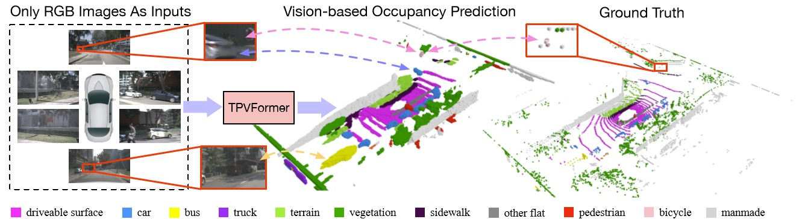
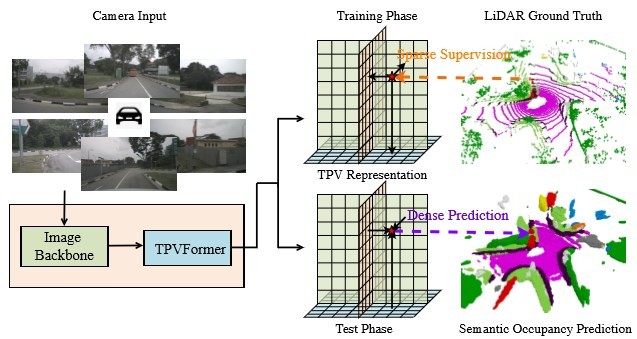
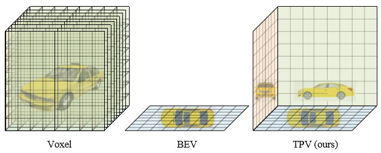
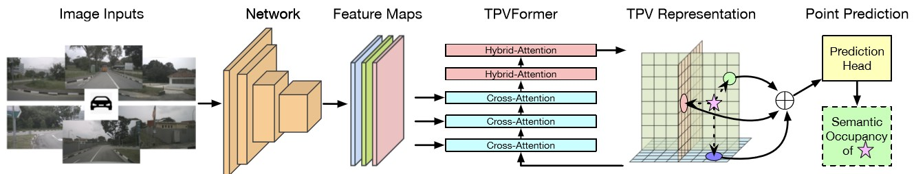
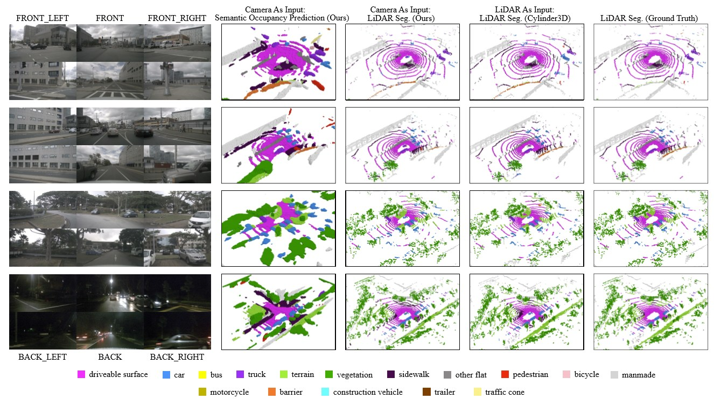
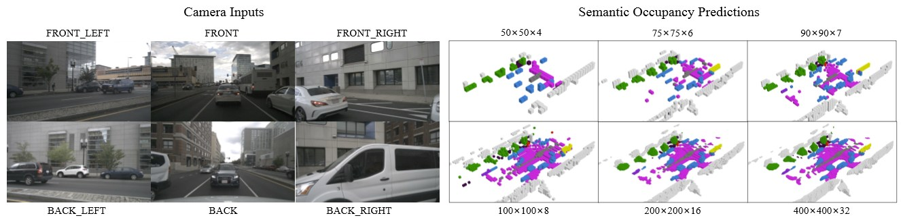
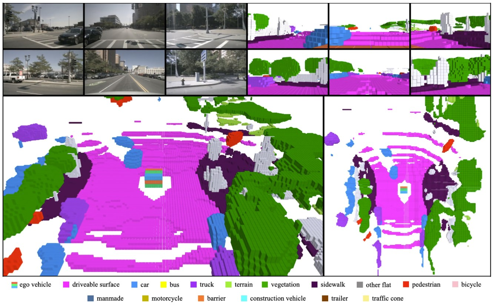
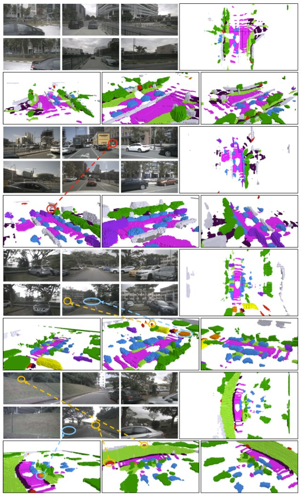

目次
Tri-Perspective View for Vision-Based 3D Semantic Occupancy Prediction
Yuanhui Huang1,2,*、Wenzhao Zheng1,2,*、Yunpeng Zhang3、Jie Zhou1,2、Jiwen Lu1,2,†
1Beijing National Research Center for Information Science and Technology（中国）、2清華大学 自動化系（中国）、3PhiGent Robotics
{huangyh22,zhengwz18}@mails.tsinghua.edu.cn; yunpengzhang97@gmail.com; {jzhou,lujiwen}@tsinghua.edu.cn
arXiv:2302.07817v2 [cs.CV]、2023年3月2日
翻訳について：原文 PDF は
10_TPVFormer_2302.07817.pdf（全 13 ページ）。本文、図の説明、図中ラベル、表、脚注、付録を訳出し、論文タイトルと参考文献は原文のまま掲載。図は原図を掲載し、英語ラベルの日本語訳を併記した。数式・数値・引用番号・コードの識別子は原文を維持。原文の記述に関する補足は「訳注」と明示し、本文と区別している。

図1：サラウンドカメラの RGB 画像のみを入力として、我々のモデル（疎な LiDAR 点の教師のみを用いて学習）は 3D 空間内のすべての体積についてセマンティック占有を予測できる。このタスクは 3D シーンの幾何学的理解と意味的理解の両方を必要とするため困難である。我々のモデルは、nuScenes［4］の検証セット（学習中には見ていない）において、正解データよりもさらに網羅的で一貫した体積占有を生成できることが観察される。LiDAR のような幾何学的入力がないにもかかわらず、我々のモデルは近くの物体と遠くの物体の 3D 位置と大きさを正確に特定できる。特に、部分的に遮蔽され、わずか 2 点の LiDAR 点でしか捉えられていない自転車さえも識別に成功しており、ビジョンベースの 3D セマンティック占有予測の潜在的な利点を示している。
図中ラベル：Only RGB Images As Inputs＝RGB 画像のみを入力、Vision-based Occupancy Prediction＝ビジョンベースの占有予測、Ground Truth＝正解、driveable surface＝走行可能路面、car＝乗用車、bus＝バス、truck＝トラック、terrain＝地形、vegetation＝植生、sidewalk＝歩道、other flat＝その他の平面、pedestrian＝歩行者、bicycle＝自転車、manmade＝人工物
要旨
ビジョン中心の自動運転知覚の最新手法は、3D シーンを記述するために鳥瞰図（BEV）表現を広く採用している。BEV はボクセル表現より効率的であるものの、単一の平面でシーンの細粒度な 3D 構造を記述することは難しい。この問題に対処するため、我々は BEV に直交する 2 つの平面を追加した三視点ビュー（tri-perspective view; TPV）表現を提案する。3D 空間内の各点は、3 つの平面上に射影された特徴を合計することでモデル化する。さらに画像特徴を 3D の TPV 空間へ持ち上げるため、TPV 特徴を効果的に得る Transformer ベースの TPV エンコーダ（TPVFormer）を提案する。注意機構を用いて、各 TPV 平面の各クエリに対応する画像特徴を集約する。実験により、疎な教師で学習した我々のモデルが全ボクセルのセマンティック占有を効果的に予測することを示す。また、nuScenes の LiDAR セグメンテーションタスクにおいて、カメラ入力のみで LiDAR ベース手法に匹敵する性能を達成できることを初めて実証する。コード：https://github.com/wzzheng/TPVFormer。
脚注：* 同等の貢献。† 責任著者。
1 はじめに
3D の周囲環境を正確かつ網羅的に知覚することは、自動運転システムにおいて重要な役割を果たす。ビジョンベースの 3D 知覚は、2D 画像から 3D 情報を効果的に抽出する手段として、LiDAR ベースの知覚に代わる有望な選択肢として近年台頭している。深度情報を直接センシングできないにもかかわらず、周囲カメラを備えたビジョンベースのモデルは、深度推定［18,45］、セマンティックマップ再構成［1,20,51］、3D 物体検出［28,31,49］といったさまざまな 3D 知覚タスクで有望な性能を示している。
3D の周囲知覚の核心は、3D シーンをいかに効果的に表現するかにある。従来の手法は 3D 空間をボクセルに分割し、各ボクセルにその状態を表すベクトルを割り当てる。正確ではあるものの、膨大な数のボクセルは計算上の大きな課題となり、疎畳み込み［13］のような特殊な技術を必要とする。屋外シーンの情報は等方的に分布していないため、最新の手法は高さ方向の次元を潰し、情報が最も大きく変化する地面平面（鳥瞰図）に主に注目する［21,27,29,32,38,49,51］。これらの手法は、各 BEV グリッドのベクトル表現の中に各物体の 3D 情報を暗黙的に符号化する。より効率的でありながら、BEV ベースの手法は 3D 物体検出タスクで驚くほど良好な性能を示す［29,32］。これは、3D 物体検出が乗用車や歩行者などのよく見られる物体について粗いレベルのバウンディングボックスの予測しか要求しないためである。しかし、実際のシーンではさまざまな 3D 構造を持つ物体に遭遇しうるため、それらすべてを平坦化されたベクトルで符号化することは（不可能ではないにせよ）困難である。したがって、より安全で頑健なビジョン中心の自動運転システムに向けては、3D の周囲環境をより網羅的かつ細粒度に理解することが必要となる。とはいえ、BEV の効率と検出性能を保ったまま、細粒度な 3D 構造をモデル化できるように BEV を一般化する方法はまだ分かっていない。

図2：3D セマンティック占有予測のための我々の手法の概要。カメラ画像を入力とし、提案する TPVFormer は学習に疎な LiDAR セマンティックラベルのみを用いるが、全ボクセルのセマンティック占有を効果的に予測できる。
図中ラベル：Camera Input＝カメラ入力、Image Backbone＝画像バックボーン、Training Phase＝学習フェーズ、Test Phase＝テストフェーズ、TPV Representation＝TPV 表現、Sparse Supervision＝疎な教師、Dense Prediction＝密な予測、LiDAR Ground Truth＝LiDAR の正解、Semantic Occupancy Prediction＝セマンティック占有予測
本論文では、この方向に前進し、3D シーンを記述するための三視点ビュー（TPV）表現を提案する。陽的・陰的ハイブリッドなシーン表現の近年の進展［7,8］に触発され、我々は BEV に直交する 2 つの平面を加えて、互いに直交する 3 つの交差平面を構築することで BEV を一般化する。各平面は 1 つの視点から 3D の周囲環境をモデル化し、それらを組み合わせることで 3D 構造の網羅的な記述が得られる。具体的には、3D 空間内の点の特徴を得るために、まずその点を 3 つの平面それぞれに射影し、双線形補間を用いて各射影点の特徴を得る。次に 3 つの射影特徴を合計して、その 3D 点の総合的な特徴とする。これにより TPV 表現は任意の解像度で 3D シーンを記述でき、3D 空間内の異なる点に対して異なる特徴を生成できる。さらに、2D 画像から TPV 特徴を効果的に得るため、Transformer ベースのエンコーダ（TPVFormer）を提案する。まず TPV グリッドクエリと対応する 2D 画像特徴との間で画像クロス注意を行い、2D 情報を 3D 空間へ持ち上げる。次に TPV 特徴の間でビュー間ハイブリッド注意（cross-view hybrid-attention）を行い、3 つの平面間の相互作用を可能にする。
TPV の優位性を示すため、我々はビジョンベースの 3D セマンティック占有予測という、実用的でありながら困難なタスクを定式化する。このタスクでは、図2 に示すように、学習には疎な LiDAR セマンティックラベルのみが与えられ、テスト時には全ボクセルの予測が求められる。しかし、この困難な設定にはベンチマークが用意されていないため、定性的な分析のみを行い、定量的な評価は 2 つの代理タスク、すなわち nuScenes［4］での LiDAR セグメンテーション（疎な学習、疎なテスト）と SemanticKITTI［2］での 3D セマンティックシーン補完（密な学習、密なテスト）で行う。どちらのタスクでも入力には RGB 画像のみを用いる。LiDAR セグメンテーションでは、評価指標を計算するための点クエリにのみ LiDAR データを用いる。可視化結果は、図1 に示すように、TPVFormer が学習時に疎な点の教師しか用いずに一貫したセマンティックボクセル占有予測を生成することを示している。また、我々のビジョンベース手法が LiDAR セグメンテーションにおいて LiDAR ベース手法に匹敵する性能を達成することを初めて実証する。
2 関連研究
ボクセルベースのシーン表現：3D シーンの効果的な表現を得ることは、3D の周囲知覚における基本的な手続きである。直接的な方法の 1 つは、3D 空間をボクセルに離散化し、各ボクセルを表すベクトルを割り当てることである［52,54］。細粒度な 3D 構造を記述できる能力により、ボクセルベースの表現は、LiDAR セグメンテーション［12,30,43,47,48,55］や 3D シーン補完［5,10,24,41,46］を含む 3D セマンティック占有予測タスクに好適である。ボクセルベースの表現は 3D セグメンテーションタスクを席巻してきたが［47］、3D 検出性能では依然として BEV ベースの手法に後れを取っている［27］。LiDAR 中心の周囲知覚におけるボクセルベース表現の成功にもかかわらず、ビジョン中心の自動運転においてボクセルベース表現を探求した研究はごくわずかである［5,26］。MonoScene［5］は、まず画像特徴を光線に沿って 3D 空間内のすべての可能な位置へ逆投影して初期ボクセル表現を得て、さらにそれを 3D UNet で処理する。しかし、ボクセル表現の非効率性のため、これを多視点画像による 3D 知覚へ一般化することは依然として困難である。このことが、シーンの細粒度な 3D 構造を記述するための、より効率的で表現力の高い方法を探求する動機となっている。
BEV ベースのシーン表現：膨大な数のボクセルは、ボクセルベース手法の計算効率にとって大きな課題となる。高さ方向の次元は他の 2 つの次元よりも含む情報が少ないことを考慮し、BEV ベースの手法は、シーンをよりコンパクトに表現するために高さ情報を各 BEV グリッドに暗黙的に符号化する［23］。BEV ベースの知覚に関する近年の研究は、画像空間から BEV 空間へ特徴をいかに効果的に変換するかに焦点を当てている［21,27,28,38,39,51］。一連の研究は、各画像について深度マップを陽に予測し、それを用いて画像特徴を 3D 空間へ射影した後に BEV プーリングを行う［21,27,29,32,38,39,51］。別の一連の研究は、BEV クエリを用い、クロス注意機構によって画像特徴から情報を暗黙的に取り込む［22,28］。BEV ベースの知覚は多視点画像からのビジョン中心の 3D 検出で大きな成功を収め［27］、LiDAR 中心の手法に匹敵する性能を示している。しかし、3D 空間のより細粒度な記述を必要とする 3D セマンティック占有予測に BEV を適用することは難しい。
陰的シーン表現：近年の手法は、シーンを記述するための陰的表現も探求している。これらは、点の 3D 座標を入力としてその点の表現を出力する連続関数を学習する［34,35,37］。ボクセルや BEV のような陽的表現と比べ、陰的表現は一般に、任意解像度でのモデル化と計算効率の高いアーキテクチャという利点を共有している［6,11,40］。これらの利点により、陰的表現はより細粒度な記述でより大規模かつ複雑なシーンへ拡張できる。特に、我々の研究は陽的・陰的ハイブリッド表現の近年の進展［7,8］に触発されている。これらは陰的表現の連続写像に空間情報を陽に注入する。そのため、陰的表現の計算効率の高いアーキテクチャと、陽的表現のより優れた空間認識を兼ね備えている。とはいえ、これらは主に 3D を考慮した画像レンダリングのための小規模で複雑なシーンに焦点を当てている。我々の知る限り、自動運転における 3D の周囲知覚のために屋外シーンを陰的表現でモデル化したのは我々が初めてである。

図3：提案する TPV 表現とボクセル表現および BEV 表現の比較。BEV はボクセル表現より効率的であるが、高さ情報を捨ててしまい、3D シーンを網羅的に記述することができない。
図中ラベル：Voxel＝ボクセル、TPV (ours)＝TPV（提案手法）
3 提案手法
3.1 BEV から TPV への一般化
自動運転の知覚では通常、複雑な 3D シーンの表現力が高くかつ効率的な表現が求められ、その中でボクセル表現と鳥瞰図（BEV）表現は最も広く採用されている 2 つの枠組みである。ボクセル表現［26,43,48］は、3D シーンを密な立方体状の特徴 \( \mathbf{V} \in \mathbb{R}^{H \times W \times D \times C} \) で記述する。ここで \( H, W, D \) はボクセル空間の空間解像度、\( C \) は特徴の次元を表す。実世界の \( (x,y,z) \) に位置する任意の点は、一対一の対応 \( \mathcal{P}_{vox} \) によってボクセル座標 \( (h,w,d) \) に写像され、得られる特徴 \( \mathbf{f}_{x,y,z} \) は \( \mathbf{V} \) を \( (h,w,d) \) でサンプリングすることで得られる：
\[ \begin{aligned} \mathbf{f}_{x,y,z} = \mathbf{v}_{h,w,d} &= \mathcal{S}(\mathbf{V}, (h,w,d)), \\ &= \mathcal{S}(\mathbf{V}, \mathcal{P}_{vox}(x,y,z)), \end{aligned} \tag{1} \]
ここで \( \mathcal{S}(arg1, arg2) \) は \( arg1 \) を \( arg2 \) で指定された位置でサンプリングすることを表し、\( \mathbf{v}_{h,w,d} \) はサンプリングされたボクセル特徴である。ボクセル空間が実世界と位置合わせされていれば、射影関数 \( \mathcal{P}_{vox} \) は単純なスケーリングと剛体変換から構成されることに注意されたい。したがって、ボクセル表現は実世界の次元性を保持し、適切な \( H, W, D \) のもとで十分な表現力を提供する。しかし、ボクセル特徴の記憶量と計算量は \( O(HWD) \) に比例するため、リアルタイムの車載アプリケーションに展開することは困難である。
よく用いられる代替手段として、BEV［22,27,28,32］は、シーンの上面視を符号化する 2D 特徴マップ \( \mathbf{B} \in \mathbb{R}^{H \times W \times C} \) で 3D シーンをモデル化する。ボクセル表現とは異なり、\( (x,y,z) \) にある点は、\( z \) 軸に関係なく地面平面の位置情報のみを用いて BEV 座標 \( (h,w) \) に射影される。\( \mathbf{B} \) からサンプリングされた各特徴 \( \mathbf{b}_{h,w} \) は、実世界で \( z \) 軸の全範囲を覆う柱状（ピラー）領域に対応する：
\[ \mathbf{f}_{x,y,\mathbf{Z}} = \mathbf{b}_{h,w} = \mathcal{S}(\mathbf{B}, (h,w)) = \mathcal{S}(\mathbf{B}, \mathcal{P}_{bev}(x,y)), \tag{2} \]
ここで \( \mathbf{f}_{x,y,\mathbf{Z}} \) は同じ \( (x,y) \) を共有し \( z \) が異なる点の特徴を表し、\( \mathcal{P}_{bev} \) は点から BEV への射影である。BEV は記憶量と計算負荷を \( O(HW) \) へと大幅に削減するものの、\( z \) 軸を完全に省略することはその表現力に悪影響を及ぼす。
この問題に対処するため、我々は、図3 に示すように、どの軸も抑制することなく 3D 空間をフルスケールでモデル化でき、かつ 3 乗の計算量を回避できる三視点ビュー（TPV）表現を提案する。形式的には、軸に沿った 3 つの直交する TPV 平面を学習する：
\[ \begin{aligned} &\mathbf{T} = [\mathbf{T}^{HW}, \mathbf{T}^{DH}, \mathbf{T}^{WD}], \ \ \mathbf{T}^{HW} \in \mathbb{R}^{H \times W \times C}, \\ &\mathbf{T}^{DH} \in \mathbb{R}^{D \times H \times C}, \ \ \mathbf{T}^{WD} \in \mathbb{R}^{W \times D \times C}, \end{aligned} \tag{3} \]
これらはそれぞれ 3D シーンの上面視、側面視、正面視を表す。\( H, W, D \) は 3 つの平面の解像度を、\( C \) は特徴の次元を表す。直感的には、複雑なシーンは異なる視点から調べることでよりよく理解できる。これらの視点がシーンについて相補的な手がかりを与えうるからである。
点クエリによる定式化。実世界の \( (x,y,z) \) にあるクエリ点が与えられたとき、TPV 表現はその点の網羅的な記述を得るために、上面・側面・正面の各視点への射影を集約しようとする。具体的には、まず点を TPV 平面に射影して座標 \( [(h,w),(d,h),(w,d)] \) を得て、これらの位置で TPV 平面をサンプリングして対応する特徴 \( [\mathbf{t}_{h,w}, \mathbf{t}_{d,h}, \mathbf{t}_{w,d}] \) を取得し、3 つの特徴を集約して最終的な \( \mathbf{f}_{x,y,z} \) を生成する：
\[ \begin{aligned} \mathbf{t}_{h,w} &= \mathcal{S}(\mathbf{T}^{HW}, (h,w)) = \mathcal{S}(\mathbf{T}^{HW}, \mathcal{P}_{hw}(x,y)), \\ \mathbf{t}_{d,h} &= \mathcal{S}(\mathbf{T}^{DH}, (d,h)) = \mathcal{S}(\mathbf{T}^{DH}, \mathcal{P}_{dh}(z,x)), \\ \mathbf{t}_{w,d} &= \mathcal{S}(\mathbf{T}^{WD}, (w,d)) = \mathcal{S}(\mathbf{T}^{WD}, \mathcal{P}_{wd}(y,z)). \end{aligned} \tag{4} \]
\[ \mathbf{f}_{x,y,z} = \mathcal{A}(\mathbf{t}_{h,w}, \mathbf{t}_{d,h}, \mathbf{t}_{w,d}), \tag{5} \]
ここでサンプリング関数 \( \mathcal{S} \) と集約関数 \( \mathcal{A} \) はそれぞれ双線形補間と総和で実装され、TPV 平面は実世界の軸に揃っているため、各射影関数 \( \mathcal{P} \) は関係する 2 つの座標に対して単純なスケーリングを行う。
ボクセル特徴による定式化。点クエリによる定式化と等価に、TPV 平面をそれぞれの直交方向に沿って展開して合計すると、ボクセル特徴空間と同様のフルスケールの 3D 特徴空間が構築される。ただし記憶量と計算量は \( O(HW + DH + WD) \) にすぎず、ボクセル表現より 1 桁低い。
BEV と比較すると、TPV の 3 つの平面は互いに直交しているため、ある平面の直交方向に沿った点の特徴は、他の 2 つの平面からサンプリングされた特徴によって多様化される。これは BEV 表現では無視されている点である。さらに、各 TPV 平面のグリッド特徴は、BEV のように完全な情報を符号化するのではなく、対応する柱状領域の視点固有の情報のみを担う。まとめると、TPV 表現は BEV を単一の上面視から相補的かつ直交する上面・側面・正面の視点へと一般化し、効率を保ちつつ 3D の周囲環境のより網羅的かつ細粒度な理解を提供できる。
3.2 TPVFormer
ビジョン中心の自動運転知覚では、表現の枠組みに応じた特定のエンコーダに入力する前に、2D バックボーンを用いて画像特徴を得ることが多い。我々は、注意機構によって画像特徴を TPV 平面へ持ち上げる Transformer ベースの TPV エンコーダ（TPVFormer）を提示する。
全体構造：TPVFormer では、図4 に示すように、TPV 平面を効果的に生成するために TPV クエリ、画像クロス注意（ICA）、ビュー間ハイブリッド注意（CVHA）を導入する。実際、TPV クエリと TPV 平面は (3) で定義された同じ特徴ベクトルの集合を指す。各 TPV クエリ \( \mathbf{t} \in \mathbf{T} \) は 3 つの平面のいずれかに属するグリッドセルの特徴であり、対応する柱状領域の視点固有の情報を符号化するために用いられる。ビュー間ハイブリッド注意は、文脈情報を集めるために、同じ視点または異なる視点の TPV クエリ間の直接的な相互作用を可能にする。画像クロス注意の内部では、TPV クエリが変形可能注意（deformable attention）によって画像特徴から視覚情報を集約する。
さらに我々は 2 種類の Transformer ブロック、すなわちハイブリッドクロス注意ブロック（HCAB）とハイブリッド注意ブロック（HAB）を構築する。CVHA と ICA の両方の注意から構成される HCAB ブロックは、画像特徴から視覚情報を効果的にクエリするために TPVFormer の前半で用いられる。HCAB ブロックに続く HAB ブロックは CVHA 注意のみを含み、文脈情報の符号化に特化している。最後に、\( N_1 \) 個の HCAB ブロックと \( N_2 \) 個の HAB ブロックを積み重ねて TPVFormer を構築する。
TPV クエリ：TPV クエリと TPV 平面は (3) で定義された同じ 2D 特徴のリストを指すが、それぞれ注意の文脈と 3D 表現の文脈で用いられる。各 TPV クエリは、対応する視点における大きさ \( s \times s \ m^2 \) の 2D グリッドセル領域に対応し、さらにその視点から直交方向に延びる 3D の柱状領域に対応する。我々のパイプラインでは、TPV クエリはまず HCAB ブロックで画像特徴からの生の視覚情報によって強化され、次に HAB ブロックで他のクエリからの文脈的手がかりによって洗練される。実装としては、TPV クエリを学習可能なパラメータとして初期化し、最初のエンコーダ層の前に 3D 位置埋め込みを加える。
画像クロス注意：TPVFormer では、マルチスケールかつ（場合によっては）複数カメラの画像特徴を TPV 平面へ持ち上げるために画像クロス注意を用いる。TPV クエリの高解像度という性質（\( \sim 10^4 \) クエリ）と複数の画像特徴マップ（各 \( \sim 10^5 \) 画素）を考えると、両者の間でフルスケールの通常のクロス注意を計算することは実行不可能である。その回避策として、効率的な変形可能注意［15,53］を用いて画像クロス注意を実装する。

図4：3D セマンティック占有予測のために提案する TPVFormer の枠組み。画像バックボーンネットワークを用いて、マルチカメラ画像のマルチスケール特徴を抽出する。次にクロス注意を行って 2D 特徴を TPV 空間へ適応的に持ち上げ、ビュー間ハイブリッド注意を用いて TPV 平面間の相互作用を可能にする。3D 空間内の点のセマンティック占有を予測するため、3 つの TPV 平面上の射影特徴の総和に軽量な予測ヘッドを適用する。
図中ラベル：Image Inputs＝画像入力、Network＝ネットワーク、Feature Maps＝特徴マップ、Hybrid-Attention＝ハイブリッド注意、Cross-Attention＝クロス注意、TPV Representation＝TPV 表現、Point Prediction＝点の予測、Prediction Head＝予測ヘッド、Semantic Occupancy of ☆＝☆のセマンティック占有
参照点をサンプリングする際には、局所的な受容野を帰納バイアスとして採用する。具体的には、上面平面の \( (h,w) \) に位置する TPV クエリ \( \mathbf{t}_{h,w} \) について、まず逆射影関数 \( \mathcal{P}_{hw}^{-1} \) によって実世界の上面視における座標 \( (x,y) \) を計算する。次に、平面の直交方向に沿って、クエリ \( \mathbf{t}_{h,w} \) のための \( N_{ref}^{HW} \) 個の参照点を一様にサンプリングする：
\[ (x,y) = \mathcal{P}_{hw}^{-1}(h,w) = \left(\left(h - \frac{H}{2}\right) \times s, \left(w - \frac{W}{2}\right) \times s\right). \tag{6} \]
\[ \mathbf{Ref}_{h,w}^{world} = (\mathcal{P}_{hw}^{-1}(h,w), \mathbf{Z}) = \{(x,y,z_i)\}_{i=1}^{N_{ref}^{HW}}, \tag{7} \]
ここで \( \mathbf{Ref}_{h,w}^{world} \) はクエリ \( \mathbf{t}_{h,w} \) に対する世界座標系での参照点の集合を表す。同様の手続きをすべての TPV クエリについて繰り返す。なお、軸の範囲が異なるため、参照点の数 \( N_{ref} \) は平面ごとに変わりうることに注意されたい。\( \mathbf{t}_{h,w} \) の参照点を導出した後、後で画像特徴マップをサンプリングするために、それらを画素座標へ射影する必要がある：
\[ \mathbf{Ref}_{h,w}^{pix} = \mathcal{P}_{pix}(\mathbf{Ref}_{h,w}^{world}) = \mathcal{P}_{pix}(\{(x,y,z_i)\}), \tag{8} \]
ここで \( \mathbf{Ref}_{h,w}^{pix} \) はクエリ \( \mathbf{t}_{h,w} \) に対する画素座標系での参照点の集合であり、\( \mathcal{P}_{pix} \) はカメラの外部パラメータと内部パラメータによって決まる透視投影関数である。異なる方向を向いた複数のカメラが存在しうるため、\( \{\mathbf{Ref}_{h,w}^{pix,j}\}_{j=1}^{N_c} \) という集合が生成されることに注意されたい。ここで \( N_c \) はカメラの数を表す。すべてのカメラがクエリ \( \mathbf{t}_{h,w} \) の参照点を捉えられるわけではないため、参照点のいずれも対応するカメラで撮影された画像上に落ちない場合には、その無効な集合を \( \{\mathbf{Ref}_{h,w}^{pix,j}\}_{j=1}^{N_c} \) から除去することで計算量をさらに削減できる。最後のステップでは、\( \mathbf{t}_{h,w} \) に適用した 2 つの線形層によってオフセットと注意重みを生成し、サンプリングした画像特徴を注意重みで重み付けして合計することで、更新された TPV クエリを生成する：
\[ \mathrm{ICA}(\mathbf{t}_{h,w}, \mathbf{I}) = \frac{1}{|N_{h,w}^{val}|} \sum_{j \in N_{h,w}^{val}} \mathrm{DA}(\mathbf{t}_{h,w}, \mathbf{Ref}_{h,w}^{pix,j}, \mathbf{I}_j), \tag{9} \]
ここで \( N_{h,w}^{val} \)、\( \mathbf{I}_j \)、\( \mathrm{DA}(\cdot) \) はそれぞれ、有効なカメラのインデックス集合、\( j \) 番目のカメラからの画像特徴、変形可能注意関数を表す。
ビュー間ハイブリッド注意：画像クロス注意では、TPV クエリは参照画像特徴を個別にサンプリングし、クエリ同士の直接的な相互作用は行われない。そこで我々は、クエリが異なる視点をまたいで情報を交換できるようにするビュー間ハイブリッド注意を提案する。これは文脈の抽出に有益である。ここでも計算量を削減するために変形可能注意を採用し、3 つの TPV 平面がキーとバリューの役割を果たす。上面平面の \( (h,w) \) に位置する TPV クエリ \( \mathbf{t}_{h,w} \) を例にとると、その参照点を、それぞれ上面・側面・正面の平面に属する参照点からなる互いに素な 3 つの部分集合にグループ化する：
\[ \mathbf{R}_{h,w} = \mathbf{R}_{h,w}^{top} \cup \mathbf{R}_{h,w}^{side} \cup \mathbf{R}_{h,w}^{front}. \tag{10} \]
上面平面上の参照点を集めるには、クエリ \( \mathbf{t}_{h,w} \) の近傍で少数のランダムな点を単純にサンプリングする。側面と正面の平面については、まず上面平面に垂直な方向に沿って 3D 点を一様にサンプリングし、それらを側面と正面の平面に射影する：
\[ \mathbf{R}_{h,w}^{side} = \{(d_i, h)\}_i, \quad \mathbf{R}_{h,w}^{front} = \{(w, d_i)\}_i. \tag{11} \]
参照点の導出に続くのは変形可能注意の典型的な手順である。すなわち、線形層によって各参照点のサンプリングオフセットと注意重みを計算し、サンプリングした特徴を注意スコアで重み付けして合計する：
\[ \mathrm{CVHA}(\mathbf{t}_{h,w}) = \mathrm{DA}(\mathbf{t}_{h,w}, \mathbf{R}_{h,w}, \mathbf{T}). \tag{12} \]
3.3 TPV の応用
TPVFormer によって得られる TPV 平面 \( \mathbf{T} \) は、3D シーンの細粒度な視点固有の情報を符号化している。とはいえ、これらは直交する交差平面の形をしており、一般的なタスクヘッドにとってそのままでは解釈しにくい。ここでは、TPV 平面を点特徴とボクセル特徴に変換する方法を説明し、さらに軽量なセグメンテーションヘッドを導入する。
点特徴。実世界での位置が与えられたとき、特徴生成の過程を、点が TPV 表現から自身の特徴をクエリする過程とみなす。(4) と (5) で定義したように、まず点を TPV 平面に射影して対応する特徴 \( [\mathbf{t}_{h,w}, \mathbf{t}_{d,h}, \mathbf{t}_{w,d}] \) を取得し、それらを合計して点ごとの特徴を得る。
ボクセル特徴。密なボクセル特徴については、各 TPV 平面を対応する直交方向に沿って能動的にブロードキャストして、同じサイズ \( H \times W \times D \times C \) の 3 つの特徴テンソルを生成し、それらを総和によって集約してフルスケールのボクセル特徴を得る。どの物理的な点の位置も事前には知らないことに注意されたい。
細粒度なセグメンテーションタスクを行うため、点特徴またはボクセル特徴に軽量な MLP を適用してそのセマンティックラベルを予測する。この MLP は 2 つの線形層と中間の活性化層のみで構成される。
4 実験
4.1 タスクの説明
我々は、3D セマンティック占有予測、LiDAR セグメンテーション、セマンティックシーン補完（SSC）の 3 種類の実験を行う。最初の 2 つのタスクは Panoptic nuScenes［17］で、最後のタスクは Semantic KITTI［2］で行う。データセットの詳細は付録 A で述べる。すべてのタスクにおいて、我々のモデルは入力として RGB 画像のみを用いる。

図5：3D セマンティック占有予測と nuScenes LiDAR セグメンテーションの可視化結果。我々の手法は、LiDAR セグメンテーションの正解よりも網羅的な予測結果を生成できる。
図中ラベル：FRONT_LEFT／FRONT／FRONT_RIGHT／BACK_LEFT／BACK／BACK_RIGHT＝前方左／前方／前方右／後方左／後方／後方右のカメラ、Camera As Input: Semantic Occupancy Prediction (Ours)＝カメラ入力：セマンティック占有予測（提案手法）、Camera As Input: LiDAR Seg. (Ours)＝カメラ入力：LiDAR セグメンテーション（提案手法）、LiDAR As Input: LiDAR Seg. (Cylinder3D)＝LiDAR 入力：LiDAR セグメンテーション（Cylinder3D）、LiDAR Seg. (Ground Truth)＝LiDAR セグメンテーション（正解）。凡例：driveable surface＝走行可能路面、car＝乗用車、bus＝バス、truck＝トラック、terrain＝地形、vegetation＝植生、sidewalk＝歩道、other flat＝その他の平面、pedestrian＝歩行者、bicycle＝自転車、manmade＝人工物、motorcycle＝オートバイ、barrier＝バリア、construction vehicle＝工事車両、trailer＝トレーラー、traffic cone＝三角コーン

図6：テスト時の任意解像度。テスト時に補間によって予測解像度を調整できる。解像度が上がるにつれて、3D 物体のより多くの詳細が捉えられる。
図中ラベル：Camera Inputs＝カメラ入力、Semantic Occupancy Predictions＝セマンティック占有予測（各パネル上下の数値は予測解像度）
3D セマンティック占有予測。密なセマンティックラベルは入手が難しいため、我々はビジョンベースの 3D セマンティック占有予測という、実用的でありながら困難なタスクを定式化する。このタスクでは、モデルは疎なセマンティックラベル（LiDAR 点）のみを用いて学習されるが、テスト時には対象とする 3D 空間内のすべてのボクセルについてセマンティック占有を生成することが求められる。これに対するベンチマークは用意されていないため、我々は手法の定性的な分析のみを行う。それでも、我々の手法はこの困難なタスクで有効な結果を示した最初の手法である。
LiDAR セグメンテーション。LiDAR セグメンテーションタスクは 3.3 節で述べた点クエリによる定式化に対応し、与えられた点のセマンティックラベルを予測する。LiDAR セグメンテーションタスクは、必ずしも点群を入力として用いるわけではない。我々の場合、入力には RGB 画像のみを用い、点は特徴のクエリと学習フェーズでの教師にのみ用いる。
セマンティックシーン補完。従来の SSC では、単一の初期 LiDAR スキャンが与えられ、ある体積内の完全なシーンについて各ボクセルが占有されているかどうかとそのセマンティックラベルを予測する必要がある。ビジョン中心の適応として、我々は入力として RGB 画像のみを用い、各ボクセルの占有とセマンティックラベルを予測する。それに応じて、学習過程はボクセルラベルで教師付けする。TPV 表現の場合、3.3 節のボクセル特徴による定式化を採用してフルスケールのボクセル特徴を生成する。一般的な慣行に従い、シーン補完（SC）タスクについてはセマンティッククラスを無視した占有ボクセルの IoU（intersection over union）を、SSC タスクについては全セマンティッククラスの mIoU を報告する。
4.2 実装の詳細
3D セマンティック占有予測と LiDAR セグメンテーション。性能と効率の異なるトレードオフに対応するため、TPVFormer-Base と TPVFormer-Small の 2 つのバージョンを構築する。TPVFormer-Base は FCOS3D［44］のチェックポイントで初期化した ResNet101-DCN［15,19］を用い、TPVFormer-Small は ImageNet［16］で事前学習した ResNet-50［19］を採用する。Cylinder3D［55］に従い、交差エントロピー損失と lovasz-softmax［3］損失の両方を用いてネットワークを最適化する。lovasz-softmax 損失については、クラスごとの IoU スコアを最大化するために LiDAR スキャンの実在する点の特徴を入力として用い、一方、交差エントロピー損失ではボクセル特徴を用いて点の分類精度を向上させ、意味的な曖昧さを回避する。3D セマンティック占有予測では、点を 1 つも含まないボクセルに新たに「空」のラベルを割り当てることで、疎な点群からボクセルごとの擬似ラベルを生成し、lovasz-softmax 損失と交差エントロピー損失の両方への入力としてボクセル予測を用いる。
セマンティックシーン補完。公平な比較のため、SSC タスクでは MonoScene［5］の設定に従う。モデルのアーキテクチャとしては、マルチスケールの画像特徴を生成する 2D バックボーンとして、事前学習済みの EfficientNetB7［42］に基づく 2D UNet を採用する。これは MonoScene と同じである。最適化には、関係損失（relation loss）を除いて MonoScene の損失を用いる。詳細は付録 B で述べる。
| 手法 | 入力モダリティ | mIoU | バリア | 自転車 | バス | 乗用車 | 工事車両 | オートバイ | 歩行者 | 三角コーン | トレーラー | トラック | 走行可能路面 | その他の平面 | 歩道 | 地形 | 人工物 | 植生 |
|---|---|---|---|---|---|---|---|---|---|---|---|---|---|---|---|---|---|---|
| MINet ［25］ | LiDAR | 56.3 | 54.6 | 8.2 | 62.1 | 76.6 | 23.0 | 58.7 | 37.6 | 34.9 | 61.5 | 46.9 | 93.3 | 56.4 | 63.8 | 64.8 | 79.3 | 78.3 |
| PolarNet ［50］ | LiDAR | 69.4 | 72.2 | 16.8 | 77.0 | 86.5 | 51.1 | 69.7 | 64.8 | 54.1 | 69.7 | 63.5 | 96.6 | 67.1 | 77.7 | 72.1 | 87.1 | 84.5 |
| PolarSteam ［9］ | LiDAR | 73.4 | 71.4 | 27.8 | 78.1 | 82.0 | 61.3 | 77.8 | 75.1 | 72.4 | 79.6 | 63.7 | 96.0 | 66.5 | 76.9 | 73.0 | 88.5 | 84.8 |
| JS3C-Net ［46］ | LiDAR | 73.6 | 80.1 | 26.2 | 87.8 | 84.5 | 55.2 | 72.6 | 71.3 | 66.3 | 76.8 | 71.2 | 96.8 | 64.5 | 76.9 | 74.1 | 87.5 | 86.1 |
| AMVNet ［30］ | LiDAR | 77.3 | 80.6 | 32.0 | 81.7 | 88.9 | 67.1 | 84.3 | 76.1 | 73.5 | 84.9 | 67.3 | 97.5 | 67.4 | 79.4 | 75.5 | 91.5 | 88.7 |
| SPVNAS ［43］ | LiDAR | 77.4 | 80.0 | 30.0 | 91.9 | 90.8 | 64.7 | 79.0 | 75.6 | 70.9 | 81.0 | 74.6 | 97.4 | 69.2 | 80.0 | 76.1 | 89.3 | 87.1 |
| Cylinder3D++ ［55］ | LiDAR | 77.9 | 82.8 | 33.9 | 84.3 | 89.4 | 69.6 | 79.4 | 77.3 | 73.4 | 84.6 | 69.4 | 97.7 | 70.2 | 80.3 | 75.5 | 90.4 | 87.6 |
| AF2S3Net ［12］ | LiDAR | 78.3 | 78.9 | 52.2 | 89.9 | 84.2 | 77.4 | 74.3 | 77.3 | 72.0 | 83.9 | 73.8 | 97.1 | 66.5 | 77.5 | 74.0 | 87.7 | 86.8 |
| DRINet++ ［48］ | LiDAR | 80.4 | 85.5 | 43.2 | 90.5 | 92.1 | 64.7 | 86.0 | 83.0 | 73.3 | 83.9 | 75.8 | 97.0 | 71.0 | 81.0 | 77.7 | 91.6 | 90.2 |
| LidarMultiNet ［47］ | LiDAR | 81.4 | 80.4 | 48.4 | 94.3 | 90.0 | 71.5 | 87.2 | 85.2 | 80.4 | 86.9 | 74.8 | 97.8 | 67.3 | 80.7 | 76.5 | 92.1 | 89.6 |
| TPVFormer-Small（提案手法） | カメラ | 59.2 | 65.6 | 15.7 | 75.1 | 80.0 | 45.8 | 43.1 | 44.3 | 26.8 | 72.8 | 55.9 | 92.3 | 53.7 | 61.0 | 59.2 | 79.7 | 75.6 |
| TPVFormer-Base（提案手法） | カメラ | 69.4 | 74.0 | 27.5 | 86.3 | 85.5 | 60.7 | 68.0 | 62.1 | 49.1 | 81.9 | 68.4 | 94.1 | 59.5 | 66.5 | 63.5 | 83.8 | 79.9 |
表1：nuScenes テストセットにおける LiDAR セグメンテーションの結果。決定的なモダリティの違いがあるにもかかわらず、我々の TPVFormer-Base は LiDAR ベース手法に匹敵する性能を達成している。
| 手法 | 入力モダリティ | SC IoU | SSC mIoU | 道路 (15.30%) | 歩道 (11.13%) | 駐車場 (1.12%) | その他の地面 (0.56%) | 建物 (14.1%) | 乗用車 (3.92%) | トラック (0.16%) | 自転車 (0.03%) | オートバイ (0.03%) | その他の車両 (0.20%) | 植生 (39.3%) | 幹 (0.51%) | 地形 (9.17%) | 人 (0.07%) | 自転車乗り (0.07%) | オートバイ乗り (0.05%) | フェンス (3.90%) | ポール (0.29%) | 交通標識 (0.08%) |
|---|---|---|---|---|---|---|---|---|---|---|---|---|---|---|---|---|---|---|---|---|---|---|
| LMSCNet ［41］ | カメラ | 31.38 | 7.07 | 46.70 | 19.50 | 13.50 | 3.10 | 10.30 | 14.30 | 0.30 | 0.00 | 0.00 | 0.00 | 10.80 | 0.00 | 10.40 | 0.00 | 0.00 | 0.00 | 5.40 | 0.00 | 0.00 |
| 3DSketch ［10］ | カメラ | 26.85 | 6.23 | 37.70 | 19.80 | 0.00 | 0.00 | 12.10 | 17.10 | 0.00 | 0.00 | 0.00 | 0.00 | 12.10 | 0.00 | 16.10 | 0.00 | 0.00 | 0.00 | 3.40 | 0.00 | 0.00 |
| AICNet ［24］ | カメラ | 23.93 | 7.09 | 39.30 | 18.30 | 19.80 | 1.60 | 9.60 | 15.30 | 0.70 | 0.00 | 0.00 | 0.00 | 9.60 | 1.90 | 13.50 | 0.00 | 0.00 | 0.00 | 5.00 | 0.10 | 0.00 |
| JS3C-Net ［46］ | カメラ | 34.00 | 8.97 | 47.30 | 21.70 | 19.90 | 2.80 | 12.70 | 20.10 | 0.80 | 0.00 | 0.00 | 4.10 | 14.20 | 3.10 | 12.40 | 0.00 | 0.20 | 0.20 | 8.70 | 1.90 | 0.30 |
| MonoScene ［5］ | カメラ | 34.16 | 11.08 | 54.70 | 27.10 | 24.80 | 5.70 | 14.40 | 18.80 | 3.30 | 0.50 | 0.70 | 4.40 | 14.90 | 2.40 | 19.50 | 1.00 | 1.40 | 0.40 | 11.10 | 3.30 | 2.10 |
| TPVFormer（提案手法） | カメラ | 34.25 | 11.26 | 55.10 | 27.20 | 27.40 | 6.50 | 14.80 | 19.20 | 3.70 | 1.00 | 0.50 | 2.30 | 13.90 | 2.60 | 20.40 | 1.10 | 2.40 | 0.30 | 11.00 | 2.90 | 1.50 |
表2：SemanticKITTI テストセットにおけるセマンティックシーン補完の結果。公平な比較のため、最初の 4 手法については MonoScene［5］で報告された RGB 推論版の性能を用いる。我々は、3D 畳み込みに基づく MonoScene を含む他の手法を IoU と mIoU の両方で大きく上回っている。
（訳注：表中の太字は最良値、下線は原表の下線（2 番目の値と思われる）を再現したもの。クラス名の下の括弧内の百分率は原表どおり各クラスの頻度。）
4.3 3D セマンティック占有予測の結果
主な結果。図5 に、SOP（セマンティック占有予測）の主な可視化結果を示す。我々の結果は LiDAR セグメンテーションの正解よりもはるかに密で現実的であり、3D シーンのモデル化とセマンティック占有予測における TPV 表現の有効性を裏付けている。さらに、LiDAR 点のみをクエリした場合の予測は正解に非常に近く、いくつかの場合には Cylinder3D による予測を上回る。例えば、Cylinder3D は 1 つ目のシーンの右端にある 2 台のトラックのうち 1 台を予測できていないが、我々の TPVFormer は正しく予測している。
テスト時の任意解像度。セグメンテーションヘッドが単純であるため、ネットワークを再学習することなく、テスト時に TPV 平面の解像度を任意に調整できる。図6 は解像度調整の結果を示しており、TPV 平面の解像度を初期の 50x50x4 から 8 倍まで段階的に上げている。解像度が上がるにつれて、TPV 表現が 3D 物体の形状などのより多くの詳細を捉えられることは明らかである。
さらなる可視化は付録 C に掲載する。
| 損失 | mIoU | ||
|---|---|---|---|
| CE. | Lovasz | ボクセル | 点 |
| ボクセル | ボクセル | 63.17 | 50.66 |
| ボクセル | 点 | 63.37 | 64.80 |
| 点 | ボクセル | 64.07 | 64.46 |
| 点 | 点 | 49.94 | 64.02 |
表3：LiDAR セグメンテーションにおける損失関数への入力としての異なる予測タイプ。損失の列の「ボクセル」と「点」は、それぞれボクセル予測と点予測を表す。ボクセル予測と点予測の両方で計算した mIoU を報告する。
| 手法 | 解像度 | 特徴次元 | 点 mIoU |
|---|---|---|---|
| BEVFormer | 100x100 | 256 | 50.37 |
| 200x200 | 256 | 56.21 | |
| TPVFormer | 100x100x8 | 256 | 64.15 |
| 200x200x16 | 128 | 68.86 |
表4：解像度と特徴次元に関するアブレーション。
| HCAB 数 | HAB 数 | SC IoU | SSC mIoU |
|---|---|---|---|
| 2 | 4 | 35.55 | 10.49 |
| 3 | 2 | 35.61 | 11.36 |
| 4 | 0 | 35.79 | 10.82 |
表5：セマンティックシーン補完における HCAB ブロックと HAB ブロックの数の違い。これらの実験では、注意モジュールの総数を一定に保っている。
4.4 LiDAR セグメンテーションの結果
LiDAR セグメンテーションタスクに対する最初のビジョンベース手法として、我々は TPVFormer を LiDAR ベース手法と比較評価する。表1 に示すように、TPVFormer は大半の LiDAR ベース手法に匹敵する mIoU（\( \sim 70\% \)）を達成している。LiDAR ベース手法では点群に 3D 構造情報がすぐに利用できる形で含まれているのに対し、我々の手法は 2D 画像入力のみから完全な 3D シーンを高解像度で再構成する必要があるため、これは自明なことではない。検証セットでの結果は付録 D に含める。
4.5 セマンティックシーン補完の結果
表2 に、SemanticKITTI テストセットにおけるセマンティックシーン補完タスクの結果を報告する。我々の TPVFormer を、ボクセル空間での 3D 畳み込みに基づくビジョンベース手法である MonoScene［5］と比較する。また、MonoScene［5］で提供されている 4 つのベースライン手法も含める。TPVFormer は IoU と mIoU の両方で他のすべての手法を上回っており、占有と意味の予測における TPVFormer の有効性を示している。さらに、TPVFormer はパラメータ数と計算量の両面で MonoScene に対して大きな利点を持つ。具体的には、TPVFormer のパラメータ数は MonoScene の 15.7M に対してわずか 6.0M であり、画像 1 枚あたりの FLOPS は MonoScene の 500G に対して 128G である。検証セットでの結果は付録 E で報告する。
4.6 アブレーション研究
LiDAR セグメンテーションとセマンティックシーン補完について、それぞれ nuScenes と SemanticKITTI の検証セットで TPVFormer のアブレーションを行う。
LiDAR セグメンテーションの損失関数。LiDAR セグメンテーションには、交差エントロピー（CE.）損失と lovasz-softmax 損失［3］の両方を用いる。我々の TPVFormer は 1 回の順伝播で点レベルとボクセルレベルの両方の予測を生成できるため、これらの損失関数への入力として異なる予測タイプを調べる。表3 に示すように、ボクセル予測と点予測の両方を損失関数への入力として用いた場合、両予測から得られる mIoU はいずれも高く、互いに近い値となる。しかし、ボクセル予測または点予測の一方のみを最適化に用いた場合、対応する mIoU はもう一方よりもはるかに高くなる。ボクセルレベルの教師のみが与えられた場合、TPV 表現はボクセル空間で離散化されてしまう可能性があり、そのため点予測の生成に用いる補間が機能しなくなると我々は考える。点レベルの教師のみの場合、TPV はボクセル空間に内在する離散化の戦略を学習できない。
その他の設計上の選択。表4 では、その他の設計上の選択についてアブレーションを行い、我々の手法を BEVFormer を適応させたものと比較する。解像度を上げることはより細粒度な構造をモデル化する能力を高める直接的な方法であるため、TPVFormer は特徴次元よりも解像度を優先する。加えて、我々の手法はすべての構成で BEVFormer より優れた性能を示しており、TPV が 3 つの相補的な交差ビューによって細粒度な構造を記述する能力を大幅に向上させることが確認される。
HCAB ブロックと HAB ブロックの数。HCAB ブロックと HAB ブロックはそれぞれ画像特徴からの視覚情報と他の TPV クエリからの文脈情報を集約するため、表5 で 2 種類のブロックの比率を調べる。HCAB ブロックの数を増やすにつれて IoU は向上しており、幾何の理解において直接的な視覚的手がかりが重要であることを裏付けている。しかし、mIoU の最大値は HCAB ブロックと HAB ブロックを中程度の数ずつ用いたときに達成されることから、意味の予測は視覚情報と文脈情報の両方に依存している。
5 結論
本論文では、3D シーンの細粒度な構造を効率的に記述できる三視点ビュー（TPV）表現を提示した。画像特徴を 3D の TPV 空間へ持ち上げるため、注意機構に基づく TPVFormer モデルを提案した。可視化結果により、我々の TPVFormer が学習時に疎な点の教師のみを用いて一貫したセマンティックボクセル占有予測を生成することを示した。また、nuScenes の LiDAR セグメンテーションタスクにおいて、我々のビジョンベース手法が LiDAR ベース手法に匹敵する性能を達成することを初めて実証した。

図7：nuScenes 検証セット（学習フェーズでは見ていない）での 3D セマンティック占有予測のビデオデモからサンプリングした画像。3D 空間内の全ボクセルについてセマンティック占有を予測している。左上の 6 枚の画像は、前方左、前方、前方右、後方左、後方、後方右のカメラで撮影された、我々のモデルへの入力である。右上の 6 枚の画像は、入力と対応する視点での我々の予測結果を表す。下の 2 枚の画像は予測の全体像を示しており、赤・緑・青の箱は自車両を表す。
図中ラベル（凡例）：ego vehicle＝自車両、driveable surface＝走行可能路面、car＝乗用車、bus＝バス、truck＝トラック、terrain＝地形、vegetation＝植生、sidewalk＝歩道、other flat＝その他の平面、pedestrian＝歩行者、bicycle＝自転車、manmade＝人工物、motorcycle＝オートバイ、barrier＝バリア、construction vehicle＝工事車両、trailer＝トレーラー、traffic cone＝三角コーン
A データセットの詳細
Panoptic nuScenes データセット［17］は、各 20 秒間の 1000 の走行シーンを収集したもので、キーフレームは 2Hz でアノテーションされている。各サンプルは、水平 FOV 360° をなす 6 台のカメラからの RGB 画像と、32 ビーム LiDAR センサからの点群データを含む。計 1000 シーンは、公式にそれぞれ 700、150、150 シーンの学習・検証・テスト分割に分けられている。
SemanticKITTI データセット［2］は大規模な屋外シーンのデータセットであり、\( 256 \times 256 \times 32 \) のグリッドにボクセル化された車載 LiDAR スキャンを含む。各ボクセルの一辺の長さは 0.2m で、21 クラス（19 のセマンティッククラス、1 つの空きクラス、1 つの不明クラス）のいずれかでラベル付けされている。我々の実験では、KITTI odometry ベンチマークの cam2 で撮影された RGB 画像も用いる。ボクセルデータと画像データは公式に 22 のシーケンスとして整理され、学習・検証・テスト用に 10/1/11 シーケンスに分割されている。
B 実装の詳細
3D セマンティック占有予測と LiDAR セグメンテーション。TPVFormer-Base は FCOS3D［44］のチェックポイントで初期化した ResNet101-DCN［15,19］を用い、TPVFormer-Small は ImageNet［16］で事前学習した ResNet-50［19］を採用する。TPV の解像度は base 版と small 版でそれぞれ 200x200x16 と 100x100x8 であり、TPVFormer-Small ではより細かい教師のために TPV 平面を 2 倍にアップサンプリングする。両者は同じ TPV 特徴次元 128 を共有するが、base モデルはマルチスケールの画像特徴と 1600x900 の入力画像解像度を用いるのに対し、small モデルはシングルスケールの画像特徴と 800x450 の入力を用いる。
学習には AdamW［33］オプティマイザを採用し、初期学習率を 2e-4、重み減衰を 0.01 とする。最初の 500 イテレーションで線形ウォームアップを行うコサイン学習率スケジューラを用い、BEVFormer［28］と同じ画像データ拡張戦略を用いる。すべてのモデルは 8 台の A100 GPU 上でバッチサイズ 8 として 24 エポック学習する。
セマンティックシーン補完。マルチスケールの画像特徴を生成する 2D バックボーンとして、事前学習済みの EfficientNetB7［42］に基づく 2D UNet を採用する。これは MonoScene と同じである。さらに、TPV 平面の解像度を 128x128x16 に設定し、MonoScene と同じサイズの 3D ボクセル特徴テンソルを生成する。ただし、我々の TPV 平面は 2D 特徴マップであるのに対し、MonoScene は 3D ボクセル特徴を直接扱う。入力には 1220x370 に切り出した cam2 の RGB 画像を用い、特徴次元は 96 とする。最適化には、TPVFormer が 3D CRP モジュールやダウンサンプリング操作を持たないため、関係損失を除いて MonoScene の損失を用いる。学習については、概ね MonoScene のレシピに従う。具体的には、学習率 2e-4、重み減衰 0.01、コサインスケジューラを用いる。その他の設定は同じに保つ。公平な比較のため、MonoScene の公式コードもコサイン学習率スケジューラで再実行する。
C 3D セマンティック占有予測の結果
nuScenes 検証セットでの 3D セマンティック占有予測のビデオデモ1を提供し、サンプリングした画像を図7 に示す。図8 は、nuScenes 検証セットの 4 つのサンプルに対する我々のモデルの詳細な可視化結果を示している。各サンプルについて、6 枚のサラウンドカメラ画像、予測されたシーンの上面視、および 3 つの異なる角度から拡大した結果を示す。加えて、小さな物体や希少な物体の予測を円で強調し、さらに矢印付きの破線で RGB 画像中の対応する実物と結び付けている。具体的には、自転車、オートバイ、歩行者をそれぞれ赤、青、黄色の円で強調している。これらの物体の中には RGB 画像ではほとんど見えないものもあるが、それでも我々のモデルはそれらの予測に成功していることに注意されたい。

図8：3D セマンティック占有予測のために提案する TPVFormer のさらなる可視化。
D LiDAR セグメンテーションの結果
表6 に、nuScenes 検証セットにおける LiDAR セグメンテーションでの TPVFormer の性能を報告する。公平な比較のため、BEVFormer の時間モジュールを自己注意モジュールに置き換え、特徴次元を 256 として、BEVFormer-Base と TPVFormer-Base のモデルサイズを同程度にする。TPVFormer-Base の mIoU は、決定的なモダリティの違いがあるにもかかわらず LiDAR ベース手法と同等である。さらに、我々の TPVFormer-Base は BEVFormer-Base よりも 12.7% 高い mIoU を達成しており、シーンの細粒度な 3D 構造のモデル化における TPV の有効性を示している。
E セマンティックシーン補完の結果
表7 に、SemanticKITTI 検証セットでのセマンティックシーン補完の性能を示す。TPVFormer はシーン補完の IoU では最高値を達成していないものの、セマンティックシーン補完の mIoU では明確な差をつけて他の手法を上回っている。公平な比較のため、我々の環境で公式コードを用いて MonoScene［5］を再現し、我々のレシピに従ってコサイン学習率を用いた場合の性能も報告する。
| 手法 | 入力モダリティ | mIoU | バリア | 自転車 | バス | 乗用車 | 工事車両 | オートバイ | 歩行者 | 三角コーン | トレーラー | トラック | 走行可能路面 | その他の平面 | 歩道 | 地形 | 人工物 | 植生 |
|---|---|---|---|---|---|---|---|---|---|---|---|---|---|---|---|---|---|---|
| RangeNet++ ［36］ | LiDAR | 65.5 | 66.0 | 21.3 | 77.2 | 80.9 | 30.2 | 66.8 | 69.6 | 52.1 | 54.2 | 72.3 | 94.1 | 66.6 | 63.5 | 70.1 | 83.1 | 79.8 |
| PolarNet ［50］ | LiDAR | 71.0 | 74.7 | 28.2 | 85.3 | 90.9 | 35.1 | 77.5 | 71.3 | 58.8 | 57.4 | 76.1 | 96.5 | 71.1 | 74.7 | 74.0 | 87.3 | 85.7 |
| Salsanext ［14］ | LiDAR | 72.2 | 74.8 | 34.1 | 85.9 | 88.4 | 42.2 | 72.4 | 72.2 | 63.1 | 61.3 | 76.5 | 96.0 | 70.8 | 71.2 | 71.5 | 86.7 | 84.4 |
| Cylinder3D++ ［55］ | LiDAR | 76.1 | 76.4 | 40.3 | 91.2 | 93.8 | 51.3 | 78.0 | 78.9 | 64.9 | 62.1 | 84.4 | 96.8 | 71.6 | 76.4 | 75.4 | 90.5 | 87.4 |
| BEVFormer-Base ［28］ | カメラ | 56.2 | 54.0 | 22.8 | 76.7 | 74.0 | 45.8 | 53.1 | 44.5 | 24.7 | 54.7 | 65.5 | 88.5 | 58.1 | 50.5 | 52.8 | 71.0 | 63.0 |
| TPVFormer-Small（提案手法） | カメラ | 59.3 | 64.9 | 27.0 | 83.0 | 82.8 | 38.3 | 27.4 | 44.9 | 24.0 | 55.4 | 73.6 | 91.7 | 60.7 | 59.8 | 61.1 | 78.2 | 76.5 |
| TPVFormer-Base（提案手法） | カメラ | 68.9 | 70.0 | 40.9 | 93.7 | 85.6 | 49.8 | 68.4 | 59.7 | 38.2 | 65.3 | 83.0 | 93.3 | 64.4 | 64.3 | 64.5 | 81.6 | 79.3 |
表6：nuScenes 検証セットにおける LiDAR セグメンテーションの結果。決定的なモダリティの違いがあるにもかかわらず、我々の TPVFormer-Base は LiDAR ベース手法に匹敵する性能を達成している。さらに、BEVFormer と TPVFormer の mIoU の差は、シーンの細粒度な 3D 構造のモデル化における TPV の有効性を明確に証明している。
| 手法 | 入力モダリティ | SC IoU | SSC mIoU | 道路 (15.30%) | 歩道 (11.13%) | 駐車場 (1.12%) | その他の地面 (0.56%) | 建物 (14.1%) | 乗用車 (3.92%) | トラック (0.16%) | 自転車 (0.03%) | オートバイ (0.03%) | その他の車両 (0.20%) | 植生 (39.3%) | 幹 (0.51%) | 地形 (9.17%) | 人 (0.07%) | 自転車乗り (0.07%) | オートバイ乗り (0.05%) | フェンス (3.90%) | ポール (0.29%) | 交通標識 (0.08%) |
|---|---|---|---|---|---|---|---|---|---|---|---|---|---|---|---|---|---|---|---|---|---|---|
| LMSCNet ［41］ | カメラ | 28.61 | 6.70 | 40.68 | 18.22 | 4.38 | 0.00 | 10.31 | 18.33 | 0.00 | 0.00 | 0.00 | 0.00 | 13.66 | 0.02 | 20.54 | 0.00 | 0.00 | 0.00 | 1.21 | 0.00 | 0.00 |
| 3DSketch ［10］ | カメラ | 33.30 | 7.50 | 41.32 | 21.63 | 0.00 | 0.00 | 14.81 | 18.59 | 0.00 | 0.00 | 0.00 | 0.00 | 19.09 | 0.00 | 26.40 | 0.00 | 0.00 | 0.00 | 0.73 | 0.00 | 0.00 |
| AICNet ［24］ | カメラ | 29.59 | 8.31 | 43.55 | 20.55 | 11.97 | 0.07 | 12.94 | 14.71 | 4.53 | 0.00 | 0.00 | 0.00 | 15.37 | 2.90 | 28.71 | 0.00 | 0.00 | 0.00 | 2.52 | 0.06 | 0.00 |
| JS3C-Net ［46］ | カメラ | 38.98 | 10.31 | 50.49 | 23.74 | 11.94 | 0.07 | 15.03 | 24.65 | 4.41 | 0.00 | 0.00 | 6.15 | 18.11 | 4.33 | 26.86 | 0.67 | 0.27 | 0.00 | 3.94 | 3.77 | 1.45 |
| MonoScene* ［5］ | カメラ | 36.86 | 11.08 | 56.52 | 26.72 | 14.27 | 0.46 | 14.09 | 23.26 | 6.98 | 0.61 | 0.45 | 1.48 | 17.89 | 2.81 | 29.64 | 1.86 | 1.20 | 0.00 | 5.84 | 4.14 | 2.25 |
| MonoScene** ［5］ | カメラ | 36.13 | 10.98 | 56.30 | 25.89 | 15.91 | 0.75 | 13.47 | 23.31 | 5.36 | 0.72 | 0.91 | 3.77 | 17.70 | 2.45 | 27.12 | 1.71 | 1.08 | 0.00 | 6.34 | 3.79 | 2.03 |
| TPVFormer（提案手法） | カメラ | 35.61 | 11.36 | 56.50 | 25.87 | 20.60 | 0.85 | 13.88 | 23.81 | 8.08 | 0.36 | 0.05 | 4.35 | 16.92 | 2.26 | 30.38 | 0.51 | 0.89 | 0.00 | 5.94 | 3.14 | 1.52 |
表7：SemanticKITTI 検証セットにおけるセマンティックシーン補完の結果。公平な比較のため、最初の 4 手法については MonoScene［5］で報告された RGB 推論版の性能を用いる。* は公式コードを用いて再現した結果を表す。** はコサイン学習率スケジュールを用いた結果を表す。
（訳注：表中の太字・下線は原表の強調を再現したもの。）
参考文献
参考文献は原文のまま掲載した（各項目末尾の、引用箇所のページを示す逆参照番号は省略した）。
- Adil Kaan Akan and Fatma Güney. Stretchbev: Stretching future instance prediction spatially and temporally. arXiv preprint arXiv:2203.13641, 2022.
- Jens Behley, Martin Garbade, Andres Milioto, Jan Quenzel, Sven Behnke, Cyrill Stachniss, and Jurgen Gall. Semantickitti: A dataset for semantic scene understanding of lidar sequences. In ICCV, pages 9297–9307, 2019.
- Maxim Berman, Amal Rannen Triki, and Matthew B Blaschko. The lovász-softmax loss: A tractable surrogate for the optimization of the intersection-over-union measure in neural networks. In CVPR, pages 4413–4421, 2018.
- Holger Caesar, Varun Bankiti, Alex H Lang, Sourabh Vora, Venice Erin Liong, Qiang Xu, Anush Krishnan, Yu Pan, Giancarlo Baldan, and Oscar Beijbom. nuscenes: A multimodal dataset for autonomous driving. In CVPR, 2020.
- Anh-Quan Cao and Raoul de Charette. Monoscene: Monocular 3d semantic scene completion. In CVPR, pages 3991–4001, 2022.
- Rohan Chabra, Jan E Lenssen, Eddy Ilg, Tanner Schmidt, Julian Straub, Steven Lovegrove, and Richard Newcombe. Deep local shapes: Learning local sdf priors for detailed 3d reconstruction. In ECCV, pages 608–625, 2020.
- Eric R Chan, Connor Z Lin, Matthew A Chan, Koki Nagano, Boxiao Pan, Shalini De Mello, Orazio Gallo, Leonidas J Guibas, Jonathan Tremblay, Sameh Khamis, et al. Efficient geometry-aware 3d generative adversarial networks. In CVPR, pages 16123–16133, 2022.
- Anpei Chen, Zexiang Xu, Andreas Geiger, Jingyi Yu, and Hao Su. Tensorf: Tensorial radiance fields. arXiv preprint arXiv:2203.09517, 2022.
- Qi Chen, Sourabh Vora, and Oscar Beijbom. Polarstream: Streaming object detection and segmentation with polar pillars. NeurIPS, 34:26871–26883, 2021.
- Xiaokang Chen, Kwan-Yee Lin, Chen Qian, Gang Zeng, and Hongsheng Li. 3d sketch-aware semantic scene completion via semi-supervised structure prior. In CVPR, pages 4193–4202, 2020.
- Yinbo Chen, Sifei Liu, and Xiaolong Wang. Learning continuous image representation with local implicit image function. In CVPR, pages 8628–8638, 2021.
- Ran Cheng, Ryan Razani, Ehsan Taghavi, Enxu Li, and Bingbing Liu. 2-s3net: Attentive feature fusion with adaptive feature selection for sparse semantic segmentation network. In CVPR, pages 12547–12556, 2021.
- Christopher Choy, JunYoung Gwak, and Silvio Savarese. 4d spatio-temporal convnets: Minkowski convolutional neural networks. In CVPR, pages 3075–3084, 2019.
- Tiago Cortinhal, George Tzelepis, and Eren Erdal Aksoy. Salsanext: Fast, uncertainty-aware semantic segmentation of lidar point clouds. In International Symposium on Visual Computing, pages 207–222. Springer, 2020.
- Jifeng Dai, Haozhi Qi, Yuwen Xiong, Yi Li, Guodong Zhang, Han Hu, and Yichen Wei. Deformable convolutional networks. In ICCV, 2017.
- Jia Deng, Wei Dong, Richard Socher, Li-Jia Li, Kai Li, and Li Fei-Fei. Imagenet: A large-scale hierarchical image database. In CVPR, pages 248–255, 2009.
- Whye Kit Fong, Rohit Mohan, Juana Valeria Hurtado, Lubing Zhou, Holger Caesar, Oscar Beijbom, and Abhinav Valada. Panoptic nuscenes: A large-scale benchmark for lidar panoptic segmentation and tracking. arXiv preprint arXiv:2109.03805, 2021.
- Vitor Guizilini, Igor Vasiljevic, Rares Ambrus, Greg Shakhnarovich, and Adrien Gaidon. Full surround monodepth from multiple cameras. arXiv preprint arXiv:2104.00152, 2021.
- Kaiming He, Xiangyu Zhang, Shaoqing Ren, and Jian Sun. Deep residual learning for image recognition. In CVPR, 2016.
- Anthony Hu, Zak Murez, Nikhil Mohan, Sofía Dudas, Jeffrey Hawke, Vijay Badrinarayanan, Roberto Cipolla, and Alex Kendall. Fiery: Future instance prediction in bird's-eye view from surround monocular cameras. In ICCV, pages 15273–15282, 2021.
- Junjie Huang, Guan Huang, Zheng Zhu, and Dalong Du. Bevdet: High-performance multi-camera 3d object detection in bird-eye-view. arXiv preprint arXiv:2112.11790, 2021.
- Yanqin Jiang, Li Zhang, Zhenwei Miao, Xiatian Zhu, Jin Gao, Weiming Hu, and Yu-Gang Jiang. Polarformer: Multi-camera 3d object detection with polar transformers. arXiv preprint arXiv:2206.15398, 2022.
- Alex H Lang, Sourabh Vora, Holger Caesar, Lubing Zhou, Jiong Yang, and Oscar Beijbom. Pointpillars: Fast encoders for object detection from point clouds. In CVPR, 2019.
- Jie Li, Kai Han, Peng Wang, Yu Liu, and Xia Yuan. Anisotropic convolutional networks for 3d semantic scene completion. In CVPR, pages 3351–3359, 2020.
- Shijie Li, Xieyuanli Chen, Yun Liu, Dengxin Dai, Cyrill Stachniss, and Juergen Gall. Multi-scale interaction for real-time lidar data segmentation on an embedded platform. RA-L, 7(2):738–745, 2021.
- Yanwei Li, Yilun Chen, Xiaojuan Qi, Zeming Li, Jian Sun, and Jiaya Jia. Unifying voxel-based representation with transformer for 3d object detection. In Advances in Neural Information Processing Systems, 2022.
- Yinhao Li, Zheng Ge, Guanyi Yu, Jinrong Yang, Zengran Wang, Yukang Shi, Jianjian Sun, and Zeming Li. Bevdepth: Acquisition of reliable depth for multi-view 3d object detection. arXiv preprint arXiv:2206.10092, 2022.
- Zhiqi Li, Wenhai Wang, Hongyang Li, Enze Xie, Chonghao Sima, Tong Lu, Qiao Yu, and Jifeng Dai. Bevformer: Learning bird's-eye-view representation from multi-camera images via spatiotemporal transformers. In ECCV, 2022.
- Tingting Liang, Hongwei Xie, Kaicheng Yu, Zhongyu Xia, Zhiwei Lin, Yongtao Wang, Tao Tang, Bing Wang, and Zhi Tang. Bevfusion: A simple and robust lidar-camera fusion framework. arXiv preprint arXiv:2205.13790, 2022.
- Venice Erin Liong, Thi Ngoc Tho Nguyen, Sergi Widjaja, Dhananjai Sharma, and Zhuang Jie Chong. Amvnet: Assertion-based multi-view fusion network for lidar semantic segmentation. arXiv preprint arXiv:2012.04934, 2020.
- Yingfei Liu, Tiancai Wang, Xiangyu Zhang, and Jian Sun. Petr: Position embedding transformation for multi-view 3d object detection. arXiv preprint arXiv:2203.05625, 2022.
- Zhijian Liu, Haotian Tang, Alexander Amini, Xinyu Yang, Huizi Mao, Daniela Rus, and Song Han. Bevfusion: Multi-task multi-sensor fusion with unified bird's-eye view representation. arXiv preprint arXiv:2205.13542, 2022.
- Ilya Loshchilov and Frank Hutter. Decoupled weight decay regularization. In ICLR, 2019.
- Lars Mescheder, Michael Oechsle, Michael Niemeyer, Sebastian Nowozin, and Andreas Geiger. Occupancy networks: Learning 3d reconstruction in function space. In CVPR, pages 4460–4470, 2019.
- B Mildenhall, PP Srinivasan, M Tancik, JT Barron, R Ramamoorthi, and R Ng. Nerf: Representing scenes as neural radiance fields for view synthesis. In ECCV, 2020.
- Andres Milioto, Ignacio Vizzo, Jens Behley, and Cyrill Stachniss. Rangenet++: Fast and accurate lidar semantic segmentation. In IROS, pages 4213–4220. IEEE, 2019.
- Jeong Joon Park, Peter Florence, Julian Straub, Richard Newcombe, and Steven Lovegrove. Deepsdf: Learning continuous signed distance functions for shape representation. In CVPR, pages 165–174, 2019.
- Jonah Philion and Sanja Fidler. Lift, splat, shoot: Encoding images from arbitrary camera rigs by implicitly unprojecting to 3d. In ECCV, pages 194–210, 2020.
- Cody Reading, Ali Harakeh, Julia Chae, and Steven L Waslander. Categorical depth distribution network for monocular 3d object detection. In CVPR, 2021.
- Christian Reiser, Songyou Peng, Yiyi Liao, and Andreas Geiger. Kilonerf: Speeding up neural radiance fields with thousands of tiny mlps. In ICCV, pages 14335–14345, 2021.
- Luis Roldao, Raoul de Charette, and Anne Verroust-Blondet. Lmscnet: Lightweight multiscale 3d semantic completion. In 2020 International Conference on 3D Vision (3DV), pages 111–119. IEEE, 2020.
- Mingxing Tan and Quoc Le. Efficientnet: Rethinking model scaling for convolutional neural networks. In ICML, pages 6105–6114, 2019.
- Haotian Tang, Zhijian Liu, Shengyu Zhao, Yujun Lin, Ji Lin, Hanrui Wang, and Song Han. Searching efficient 3d architectures with sparse point-voxel convolution. In ECCV, pages 685–702, 2020.
- Tai Wang, Xinge Zhu, Jiangmiao Pang, and Dahua Lin. Fcos3d: Fully convolutional one-stage monocular 3d object detection. In ICCV, 2021.
- Yi Wei, Linqing Zhao, Wenzhao Zheng, Zheng Zhu, Yongming Rao, Guan Huang, Jiwen Lu, and Jie Zhou. Surrounddepth: Entangling surrounding views for self-supervised multi-camera depth estimation. In CoRL, 2022.
- Xu Yan, Jiantao Gao, Jie Li, Ruimao Zhang, Zhen Li, Rui Huang, and Shuguang Cui. Sparse single sweep lidar point cloud segmentation via learning contextual shape priors from scene completion. In AAAI, volume 35, pages 3101–3109, 2021.
- Dongqiangzi Ye, Zixiang Zhou, Weijia Chen, Yufei Xie, Yu Wang, Panqu Wang, and Hassan Foroosh. Lidarmultinet: Towards a unified multi-task network for lidar perception. arXiv preprint arXiv:2209.09385, 2022.
- Maosheng Ye, Rui Wan, Shuangjie Xu, Tongyi Cao, and Qifeng Chen. Drinet++: Efficient voxel-as-point point cloud segmentation. arXiv preprint arXiv: 2111.08318, 2021.
- Yunpeng Zhang, Wenzhao Zheng, Zheng Zhu, Guan Huang, Jie Zhou, and Jiwen Lu. A simple baseline for multi-camera 3d object detection. arXiv preprint arXiv:2208.10035, 2022.
- Yang Zhang, Zixiang Zhou, Philip David, Xiangyu Yue, Zerong Xi, Boqing Gong, and Hassan Foroosh. Polarnet: An improved grid representation for online lidar point clouds semantic segmentation. In CVPR, pages 9601–9610, 2020.
- Yunpeng Zhang, Zheng Zhu, Wenzhao Zheng, Junjie Huang, Guan Huang, Jie Zhou, and Jiwen Lu. Beverse: Unified perception and prediction in birds-eye-view for vision-centric autonomous driving. arXiv preprint arXiv:2205.09743, 2022.
- Yin Zhou and Oncel Tuzel. Voxelnet: End-to-end learning for point cloud based 3d object detection. In CVPR, pages 4490–4499, 2018.
- Xizhou Zhu, Weijie Su, Lewei Lu, Bin Li, Xiaogang Wang, and Jifeng Dai. Deformable {detr}: Deformable transformers for end-to-end object detection. In ICLR, 2021.
- Xinge Zhu, Hui Zhou, Tai Wang, Fangzhou Hong, Yuexin Ma, Wei Li, Hongsheng Li, and Dahua Lin. Cylindrical and asymmetrical 3d convolution networks for lidar segmentation. In CVPR, pages 9939–9948, 2021.
- Xinge Zhu, Hui Zhou, Tai Wang, Fangzhou Hong, Yuexin Ma, Wei Li, Hongsheng Li, and Dahua Lin. Cylindrical and asymmetrical 3d convolution networks for lidar segmentation. In CVPR, pages 9939–9948, 2021.